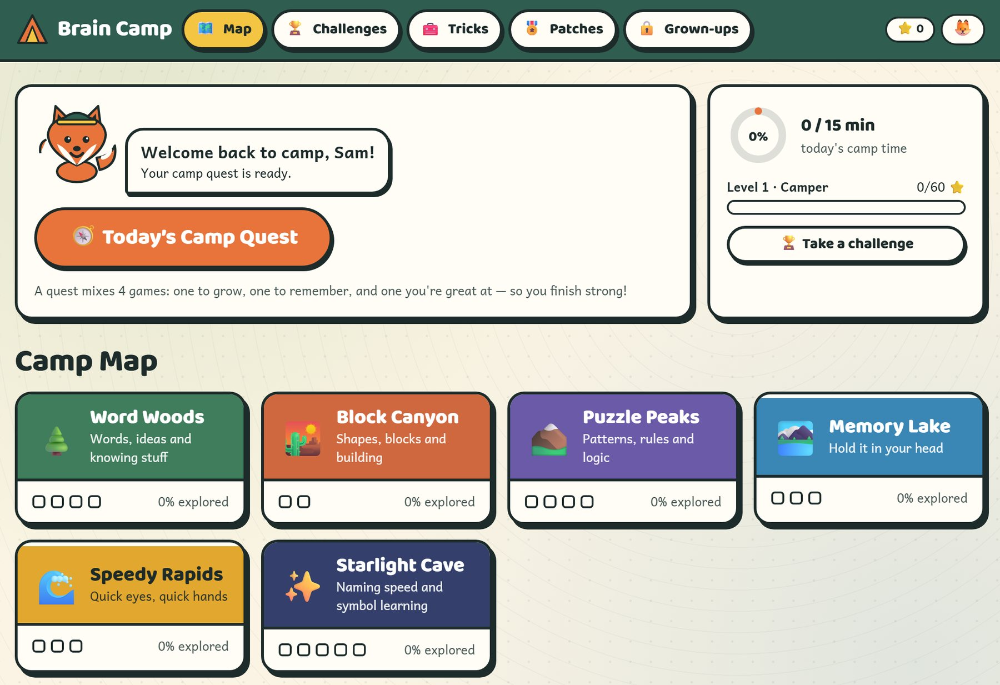
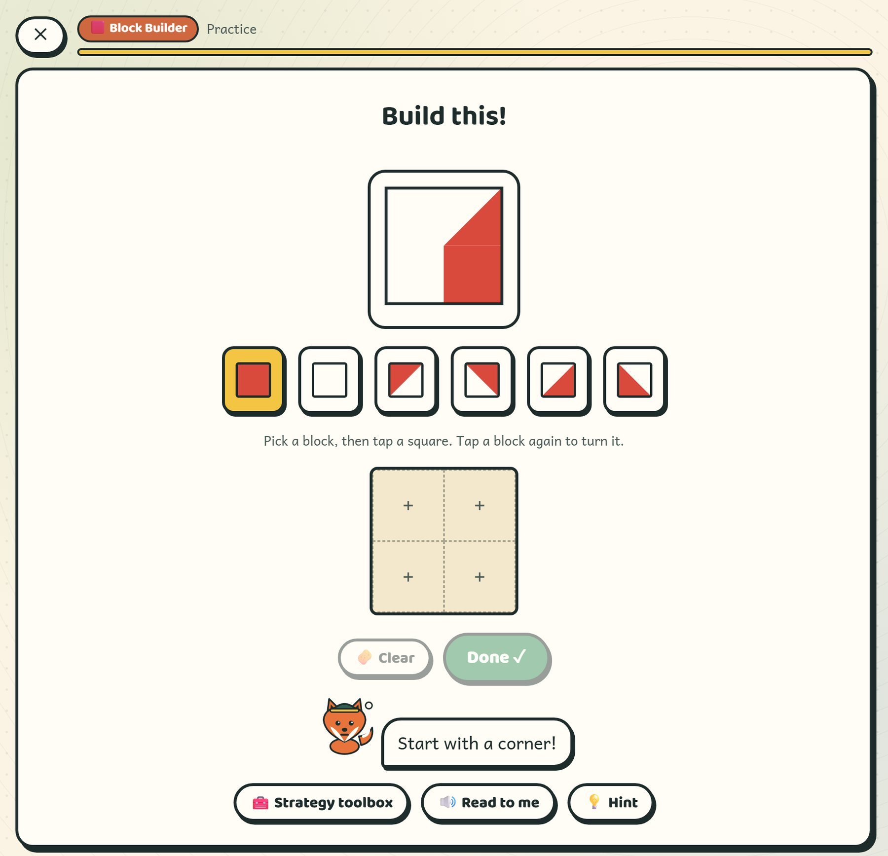
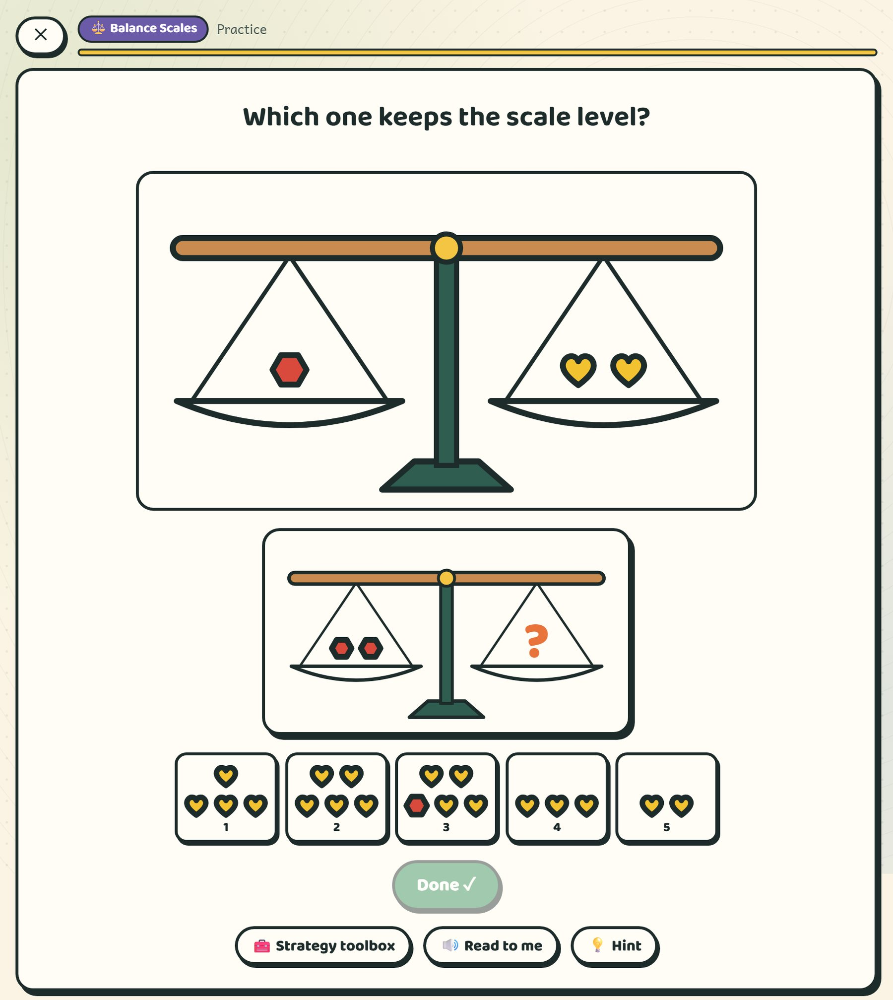

Puzzle practice that feels like camp.
Original IQ-style puzzles, played as games. Free, and no sign-up.
Start playing
Works in any browser, even offline.

Get used to the question types.
Twenty-one games, one for each kind of question on the WISC-V and tests like it. Every puzzle is new, made on the spot.



It meets them where they are.
Practice adapts as they play. Under 9, it starts below their age and eases off after a miss.
- 21
- games across words, shapes, memory and speed
- 4 to 16
- the ages it is built for
- 0
- accounts, ads or trackers
Straight answers for grown-ups.
- These are not real test questions.Every puzzle is original and generated in the browser. The aim is familiarity and fun.
- Scores are practice estimates.Reports show plain-language estimates, never an IQ score.
- Progress stays on your device.Nothing is sent anywhere. Export a backup from the Grown-ups area whenever you like.
- A tutor explains every answer.Read-aloud, hints and a worked example help younger campers along.
Runs on what you have.
- Open itAny up-to-date browser on a computer, tablet or phone.
- Add it to the home screenOn an iPad, tap Share, then Add to Home Screen.
- Play anywhereAfter the first visit it works without internet.